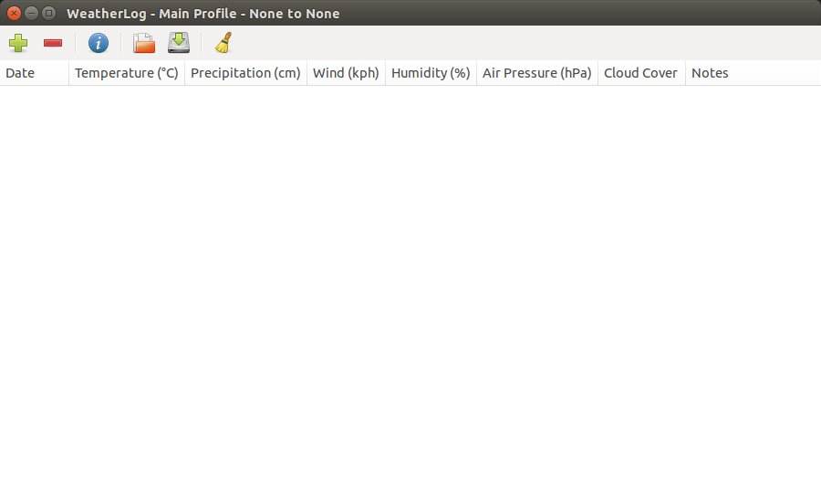
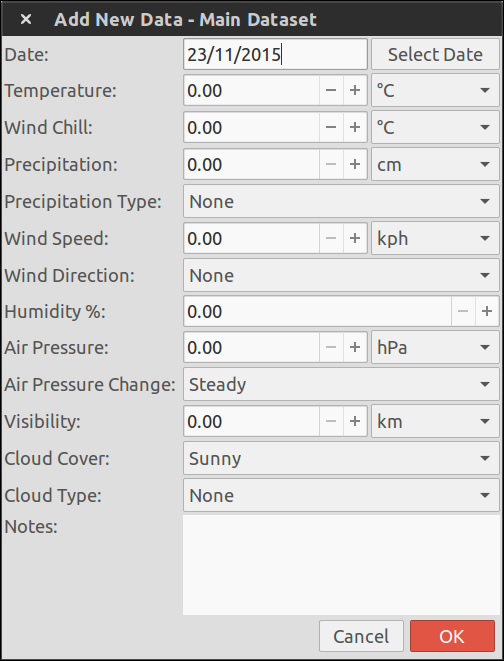
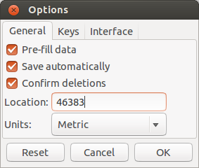
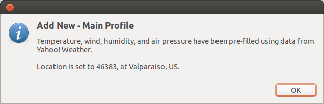

Adding Data
The first time you start WeatherLog you will be presented with a basic interface that should look similar to this:

No data is shown, just a couple menus, a toolbar, and the column titles. To add data, click the button with the plus sign on the toolbar. Alternatively, you can also select the Add New option in the File menu or press Control-N. This will show the Add New window.

All entries are required, except for the notes. Precipitation and wind values cannot be changed unless the type or direction, respectively, is set to something other than "None".
Pre-filling Data
WeatherLog can pre-fill some data, to make it easier to enter. To enable pre-filling, select Options from the Options menu, or press F2. Then make sure the checkbox next to "Pre-fill data" is selected, and enter a five digit US zip code into the location entry.

Next time you open up the Add New window, this will appear to tell you data has been pre-filled:

The temperature, wind, humidity, and air pressure fields will then have the correct data already entered, though cloud cover and precipitation still have to be entered manually.
Currently pre-filling data only works in the United States using the Yahoo! Weather API; in the future it will be available worldwide through a choice of different services.